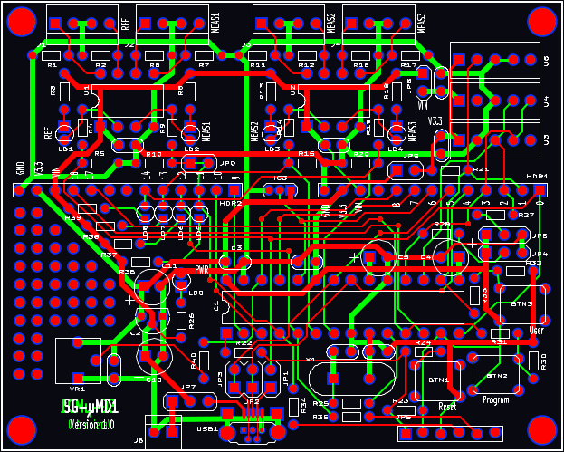
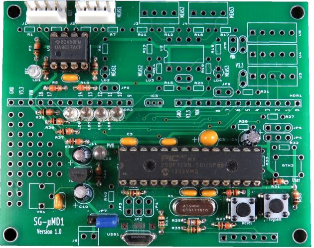

For contact info, please see the Sci.Electronics.Repair FAQ Email Links Page.
Copyright © 1994-2016
Reproduction of this document in whole or in part is permitted if both of the
following conditions are satisfied:
1. This notice is included in its entirety at the beginning.
There are no more bare V1.0 SG-µMD1 PCBs so this document is for
reference-only should have one of the assembled V1.0 PCBs.
This document provides detailed instructions for assembling the SG-µMD1
PCB Version 1.0.
A similar document will be provided when V1.2 is available.
(There is no V1.1.) V1.0 and V1.2 are functionally equivalent for µMD1
in that they can be swapped in a system or substituted for the original
chipKit DP32 version without requiring
any hardware or software changes. Most of the differences
relate to the LED indicators, the majority of which are not
useful for µMD1 anyhow. :) But the correct assembly
procedure must be used because the layout has changed slightly,
along with some part numbers. Check the marking on the
PCB to confirm the version.
The LEDs have changed both in terms of behavior and location in
SG-µMD1-V1.0. The chipKit LEDs LED1-LED4 (on signals RB3-RB0) are
still present but are located near the upper Arduino pin header and labeled
LD8-LD5. They are directly driven from the PIC32 pins and
their outputs are inverted. So for example, on SG-µMD1-V1.0,
digitalWrite(PIN_LED3, 1); turns the LED3 (LD6)
OFF. Thus for those rare occasions where the firmware outputs
something to an LED (and anyone cares), the C code may need to be modified
accordingly. It doesn't matter for the heartbeat, but in firmware
V58.xx, it might. Four additional LEDs have been added
for REF and MEAS1-MEAS3 and are directly driven from their respective
line receivers. Of all the LEDs, only LD8 and LD0 are actually
needed. LD8 (LED1) flashes to indicate that the boot loader is
active. And LD0 (Power) is a key part of Smoke Test #1, below. ;-)
All components are through-hole and except as noted in the detailed
assembly procedure, should seat flush on the
PCB. They shouldn't be suspended in mid-air swinging in the breeze. :)
Most components are identified on the silk-screen and with only a few
exceptions, the label won't be obscured when the part is installed.
SG-µMD1 V1.0 Single Axis
PCB shows the PCB populated with the parts for a single axis
system without sensors. However,
R34 and R35 are not needed unless programming the PIC32
from an IDE like MPLAB, and the JP7 header and the blue
jumper would normally be replaced
with a wire. :) The input terminating resistors for REF
and MEAS1 (R1,R2,R6,R7) have not been
installed since their value may depend on the specific configuration,
and in many cases can be omitted entirely.
A low power soldering iron with narrow tip and thin (e.g., #22 AWG) rosin-core
solder will be required. DO NOT even think about attempting this without
suitable soldering equipment. It's well worth the investment. A Weller
soldering gun or propane torch will not work. :) Rosin core solder is also
essential. And while
I'm quite confident that you never make mistakes, a means of component removal
such as a de-soldering pump (e.g., SoldaPullt™) will be highly desirable.
Screwing up component removal can easily ruin the PCB and is not covered
under the unlimited limited warranty. :-)
Proper soldering technique will be such that the exposed solder on each
pad should be shiny with a concave profile. It should not be a blob and
just needs to fill the hole. Solder is not glue.
Some excess solder doesn't hurt anything
but looks unprofessional. A 10X magnifier may come in handy for
inspection. Residual rosin can be cleaned off with
isopropyl alcohol or an environmentally-friendly electronic solvent.
However, leaving the rosin alone is also acceptable (if ugly).
Total assembly time should be well under two hours for someone proficient
in fine soldering. Cutting component leads to 1/4 to 3/8 inch before
installation will simplify soldering as the long leads won't be poking
you in the face. :( :) Then trim flush after soldering.
It is recommended that the USB driver and µMD1 GUI be installed on
your PC or laptop prior to assembly so that it will be possible to perform
a "live" test as soon as the board is ready.
All Rights Reserved
2. There is no charge except to cover the costs of copying.
DISCLAIMER
µMD1 is intended for use in hobbyist, experimental, research, and other
applications where a bug in the hardware, firmware, or software, will not
have a significant impact on the future of the Universe or anything else.
While every effort has been made to avoid this possibility, µMD1 is an
on-going development effort. We will not be responsible for any consequences
of such bugs including but not limited to damage to the wafer FAB you
picked up on eBay for $1.98 + shipping, financial loss from the use of
37 spools of ABS due to the office 3-D printer fabricating a part 25.4x
too large in all dimensions, or bruising to your pet's ego from any number
of causes directly or indirectly related to µMD1. ;-)
Acknowledgment
Thanks to Jan Beck for selecting the chipKIT DP32 and writing and testing
initial versions of the firmware and GUI. And for getting me interested
in actually getting involved in this project. If anyone had told me
six months ago that I'd be writing code in C, MIPS assembly language,
and Visual Basic - and enjoying it (sort of) - I would have suggested
they were certifiably nuts. ;-) Jan maintains the master GUI source code
as well as slightly different versions of the firmware and a
development blog on the overall project.
And a version of the firmware providing basic readout of displacement
on any Bluetooth wireless device with a terminal APP, or with a bit
more polished presentation (though not the complete GUI) on Android devices,
may be found on Jan's Web site. See that and more under "References".
Introduction
The SG-µMD1 kit of parts includes everything necessary for a 3 axis
µMD1 readout without sensors, as well as most other parts
needed to populate the PCB to be equivalent to the chipKit DP32.
Schematic for the SG-µMD1 Version 1.0
The schematic for the SG-µMD1 Version 1.0 PCB may be found at
SG-µMD1 Version 1.0 Schematic.
This includes everything on the board. Minimally
Populated SG-µMD1 Version 1.0 Schematic includes only the
parts required for a system with up to three axes but no sensors. It
eliminates chipKIT DP32 features that are not needed for µMD1 and
is the version that will be of interest to most users. The other parts
can always be added at a later time if needed.
Printing out the schematic and having it available for reference while assembling the PCB may be helpful.


As can be seen by comparing this layout with that of the chipKIT board, most parts are in similar locations. The USB connector has moved to the bottom of the board along with its associated jumpers. The Arduino headers have moved slightly and there are now complete layout patterns for up to 3 measurement channels and locations for the environmental sensors.
For use with environmental sensors, additional components will be required that are not part of the standard SG-µMD1 kit.
The populated PCB shows all components required for a single axis system without sensors. R34 and R35 are not needed unless programming the PIC32 from an IDE like MPLAB. JP7 and the blue jumper would normally be replaced with a wire. :) The missing jumpers are either not needed or bridged by a trace on the underside of the PCB. The terminating resistors (R1,R2,R6,R7) have not been installed since their value may depend on the specific configuration.
If only interested in running the PIC32 for other purpsoes, or for downloading the bootloader or other firmware using MPLAB, it's even simpler. Go to Assembly Instructions for the SG-µMD1 for MPLAB Version 1.0 PCB.
The parts list below assumes populating the SG-µMD1 for 3 channels. So for a single channel system, some parts in this list may not be present and/or there is no need to install those associated with channels 2 and 3.
Some of these components are not required for µMD1 but can be used to fully populate the board or to provide more flexibility.
Note that the through-hole USB connector is installed at a right angle to the PCB. If you would prefer one that is parallel to the PCB and are comfortable soldering an SMD connector with legs that are only 1.3 mm apart and barely accessible even with a narrow-tip soldering iron, they are readily available from electronics distributors or eBay and should be compatible with the PCB layout pattern. Or if you can locate a through-hole connector that installs flat on the PCB, contact me via the email links at the top of this page. :)
Note: The 33 pF and 0.1 µF capacitors may appear identical. Inspect their marking to identify them.
Note: The 33 pF and 0.1 µF capacitors may appear identical. Inspect their marking to identify them.
Only LD8 (which corresponds to LED1 on the chipKit board) is really needed. It is used to indicate when the boot loader is active. If installing only LD8, cut its leads about 1/10" from the body if it can't be inserted to sit flush on the PCB.
Note that on SG-µMD1 PCB Rev. 1.0, the layout has these LEDs a bit too close together. Can you believe that? :) So if installing all of them, their leads will need to be formed to fit. Take care not to overheat or stress the leads on the LEDs when soldering.
LD1 and LD2 show activity on the REF and MEAS1 inputs, respectively. Under normal conditions, these serve no useful purpose other than to make the board more illuminating and may be omitted. ;-)
For a 2 or 3 axis system, add the following:
LD3 and LD4 show activity on the MEAS2 and MEAS3 inputs, respectively. Under normal conditions, these serve no useful purpose other than to make the board more illuminating and can be omitted. ;-)
For sensors, refer to the schematic. :) The patterns on the PCB were designed to accommodate the most likely types, but some creativity may be needed depending on what actual parts are used. Jumpers and bypass capacitors will also be required. Pay careful attention to whether 5 V or 3.3 V is required.
Reference Type Part/Value Function
-------------------------------------------------------------------------------
BTN1 Pushbutton SPST NO Reset
BTN2 Pushbutton SPST NO Program
BTN3+ Pushbutton SPST NO User
C1 Capacitor 0.1 µF U1 5 V bypass
C2* Capacitor 0.1 µF U2 5 V bypass
C3 Capacitor 0.1 µF IC1 3.3 V bypass
C4 Capacitor 4.7 µF IC1 VBUS bypass
C5 Capacitor 10 µF Tant. IC1 VCAP bypass
C6 Capacitor 33 pF IC1 crystal bypass
C7 Capacitor 33 pF IC1 crystal bypass
C8 Capacitor 0.1 µF 3.3 V bypass
C9 Capacitor 0.1 µF 3.3 V bypass
C10 Capacitor 4.7 µF VIN bypass
C11 Capacitor 4.7 µF 3.3 V bypass
IC1 IC PIC32MX250F150B-50I/S PIC32 28 pin SDIP
IC2 IC MCP1700T 3.3 V regulator
J1 Header 4 pin REF input connector
J2 Header 4 pin MEAS1 input connector
J3* Header 4 pin MEAS2 input connector
J4* Header 4 pin MEAS3 input connector
JP7+ Jumper block 3 pin VIN select
LD0 LED 3 mm LED Power LED
LD1+ LED 3 mm LED REF LED
LD2+ LED 3 mm LED MEAS1 LED
LD3+ LED 3 mm LED MEAS2 LED
LD4+ LED 3 mm LED MEAS3 LED
LD5+ LED 3 mm HB LED P32_PGD RB0 LED (chipKit LED4)
LD6+ LED 3 mm HB LED P32_PGC RB1 LED (chipKit LED3)
LD7+ LED 3 mm HB LED RB2 LED (chipKit LED2)
LD8 LED 3 mm HB LED RB3 LED (chipKit LED1)
PCB1 PCB SG-µMD1-PCB Blank SG-µMD1 PCB
R1 Resistor 150 ohm, 1/8 W REF termination
R2 Resistor 150 ohm, 1/8 W REF termination
R3+ Resistor 10K ohm, 1/8 W REF LED current limiting
R4 Resistor 330 ohm, 1/8 W REF 5V->3.3 V level shift
R5 Resistor 150 ohm, 1/8 W REF 5V->3.3 V level shift
R6 Resistor 150 ohm, 1/8 W MEAS1 termination
R7 Resistor 150 ohm, 1/8 W MEAS1 termination
R8+ Resistor 10K ohm, 1/8 W MEAS1 LED current limiting
R9 Resistor 330 ohm, 1/8 W MEAS1 5V->3.3 V level shift
R10 Resistor 150 ohm, 1/8 W MEAS1 5V->3.3 V level shift
R11* Resistor 150 ohm, 1/8 W MEAS2 termination
R12* Resistor 150 ohm, 1/8 W MEAS2 termination
R13+ Resistor 10K ohm, 1/8 W MEAS2 LED current limiting
R14* Resistor 330 ohm, 1/8 W MEAS2 5V->3.3 V level shift
R15* Resistor 150 ohm, 1/8 W MEAS2 5V->3.3 V level shift
R16* Resistor 150 ohm, 1/8 W MEAS3 termination
R17* Resistor 150 ohm, 1/8 W MEAS3 termination
R18+ Resistor 10K ohm, 1/8 W MEAS3 LED current limiting
R19* Resistor 330 ohm, 1/8 W MEAS3 5V->3.3 V level shift
R20* Resistor 150 ohm, 1/8 W MEAS3 5V->3.3 V level shift
R22 Resistor 51 ohm, 1/8 W PIC32 reset
R23 Resistor 10K ohm, 1/8 W PIC32 reset
R24 Resistor 200 ohm, 1/8 W PIC32 reset
R25 Resistor 680 ohm, 1/8 W PIC32 crystal
R26 Resistor 10K ohm, 1/8 W Power LED current limiting
R30 Resistor 10K ohm, 1/8 W Program button bias network
R31 Resistor 10K ohm, 1/8 W Program button bias network
R32+ Resistor 10K ohm, 1/8 W User button bias network
R33+ Resistor 10K ohm, 1/8 W User button bias network
R34+ Resistor 51 ohm, 1/8 W P32_PGD series resistor
R35+ Resistor 51 ohm, 1/8 W P32_PGC series resistor
R36+ Resistor 10K ohm, 1/8 W P32_PGD T5CK/RB0 (LED4) current limiting
R37+ Resistor 10K ohm, 1/8 W P32_PGC RB1 (LED3) current limiting
R38+ Resistor 10K ohm, 1/8 W RB2 (LED2) current limiting
R39 Resistor 10K ohm, 1/8 W RB3 (LED1) current limiting
SKT1 Socket 28 pin, 300 mil Socket for PIC32
SKT2 Socket 8 pin, 300 mil Socket for REF/MEAS line receiver
SKT3* Socket 8 pin, 300 mil Socket for MEAS2/MEAS3 line receiver
SKT4+ Socket 40 pin, SIP Socket strip for HDR1,HDR2,JP6
U1 IC UA9637 or UA9639 REF/MEAS1 line receiver
U2* IC UA9637 or UA9639 MEAS2/MEAS3 line receiver
USB1 Connector USB Micro B female connector
X1 Crystal 8 MHz PIC32 master clock
"*" denotes parts that can be omitted for a single axis system. "+" denotes parts that are not required for µMD1.
Notes:
-- end V1.00 --